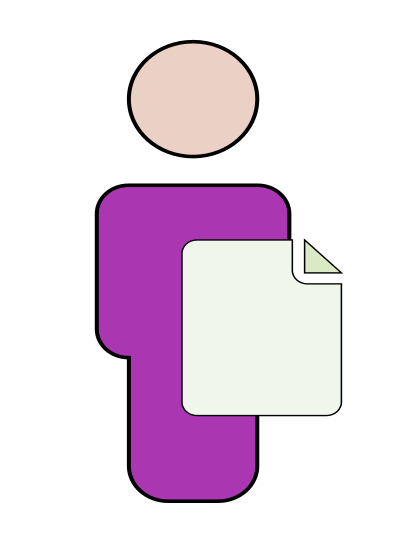

Sprinter - Lightweight Sprint Management
Welcome to the
Sprinter page! This is a tool for you to run your scrum project. It
can be used on your browser directly from the
link, and if you prefer, it may be copied
from
Github.
Introduction
So why another tool to manage a sprint development project? Excuse the lack of formality and rigour, but while sprint was
originally supposed to be a light way for teams to deliver software, the pressures of enterprise adoption, training a
rapidly turning over workforce as well as several other reasons have made it hard for larger teams to benefit from
agile processes. A tool that can front the visibiity of the project to the team and to management using a simple view,
yet can be coupled with a powerful industry strength tool when needed would help this. In addition, the variance in
adoption of agile processes needs support without rigidity.
This tool does not impose workflows or checks based on a standard, rather than pernitting data to be entered when available
and providing defaults if not evailable. It recognises that development is often an aynchronous set of activities, and so
the tool is designed to support the practise used rather than imposing anything.
Interactive sample
Click here to see how the tool looks like in usage, with inline notes
to explain the usage of each part of the tool. The usage of each part of the tool with dummy data helps see how to use the
tool and what it looks like at runtime.
Running the tool
This tool can be used
directly in your browser, or downloaded and run locally, as preferred.
The data entered is saved on your computer, so there is no host connection required. The only external dependancy is on
D3JS for rendering graphs, which would require an internet connection when used locally.
Depending on your browser cache, even that is often not required.
The workflow is not rigid, allowing for data entry at any point of time in any part of the tool. The philosophy is that
you probably have better ways to spend your time than weird data entry into a tool like this. But id does do a reasonable
job when used as described here. At the top, the tool allows the choice of tabs:
The tabs on the right of the screen are to save the project and to access help. Saving creates a local file named
<project>.json, at the location specific to your browser. The help button opens the live help page in a new
browser window. It works even in this screen, to show the parts of the tool in a fictitious project.
Save often to keep edits safe from changing the window or closing the browser unintentionally. This may create
multiple files in your browsers directory for file downloads if you use the same file name.
Backlog entry
The backlog tab is for creating requirements for a project. It contains three views of the requirements. The
default view is for creating backlog items. It is used like a whiteboard on which notes can be stuck, and arranged
by dragging them around. There are three views supported for this. There is the default whiteboard that come up
on selecting the tab, and you can switch to the other views as described further.
Creating backlog
The collored rectangles above stay in the same place as the screen is scrolled. They may be dragged and dropped
to the area below, which gets highlighted on clicking and holding the mouse button down on a rectangle.
The colors have no semantic meaning. Any convention may be observed to use colors to group related notes
together.
Project configuration
The project configuration tab is for settup up parameters to run the project. The first icon,

, is to read a project file. The project name is used with the current
time as the default to save the project. The Chrome browser on Windows will append a number to the filename to prevent
overwriting an existing file, so beware of browser specific behaviour. The start date of the project is the only date that
needs to be provided, and the remaining dates in the project are calculated as offsets from that date.
The remaining screen below the project name and start date are to configure the team members, sprints, blackout weeks,
tracking dates and miscellaneous defaults.
The team section is to add developers, testers and leads to the project. The difference between developers and leads is
in the default capacity assumption. The explanation of the miscellaneous defaullts covers this aspect.


Development and testing sprints are in the section below.
Weeks in which no work or very little work is likely are marked as blackout weeks. These are used to allocate non
working time to all developers during that window, independantly of movement in sprint boundary dates. It saves the
effort to manually edit this information for each developer.
The tracking schedule sets up which days of the week are to be displayed in the forms that record burnndown, and are
displayed on the graphs.
Mon
|
Tue |
Wed
|
Thu |
Fri
|
Sat
|
Sun
|
The last section contains defaults for creating developers or leads, new tasks and schdulling.
Monitoring progress
The monitoring screen is to plan and steer execution of development work. It provides a project view and a sprint view.
The project view displays the project as a table of sprints per row, with the backlog list on the left. The items in the
backlog can be dragged to the sprint in which they will be developed.
Coming tomorrow
Status graphs
Coming tomorrow
Checklists
Coming tomorrow
Usage
This version of the tool is for usage by an individual, loading or saving data locally when required. Saving a project
and passing the file to the next user is possible, but without out-of-the-box ability to merge such work with changes
made elsewhere.
The tool does not impose a workflow, which make it possible to enter data for whatever the team is doing at any time. There
are almost no checks on data entry.
Data
A project can be saved locally and loaded from a previosly saved version. The format for the saved file is JSON - which
makes for an extension point or interface to other tools for reporting, governance and even project management itself.